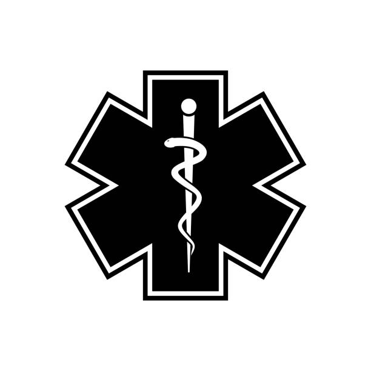

First Responders
First responders are our stakeholders because our autonomous fire prevention drones can provide them with valuable support in their mission to protect lives, property, and the environment from the dangers of wildfires, helping them to respond more effectively and safely to emergency situations.

Victims of Natural Disasters
Victims of natural disasters are our stakeholders because our autonomous fire prevention drones offer proactive measures to mitigate the impact of wildfires, potentially reducing the devastation and loss experienced by communities affected by such disasters.

Arizona State University
Arizona State University is our stakeholder because our autonomous fire prevention drones can offer innovative solutions that align with the university's commitment to research, technology, and community engagement, potentially contributing to advancements in wildfire prevention and management while also providing valuable educational and research opportunities for students and faculty.